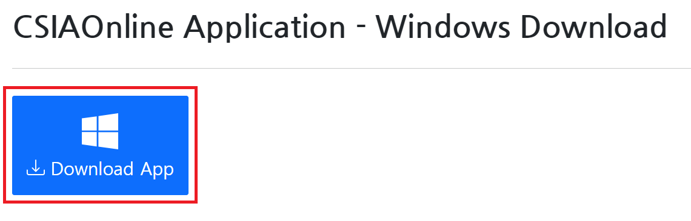
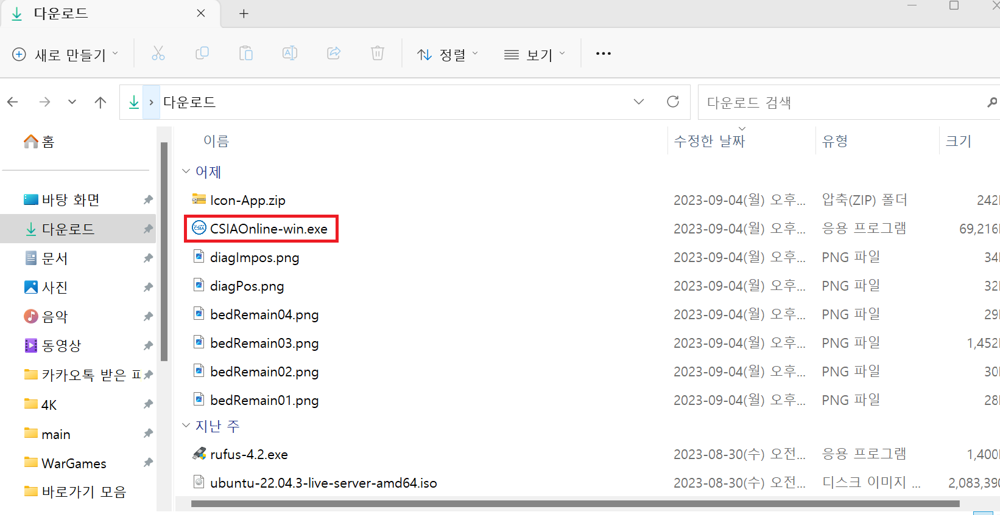
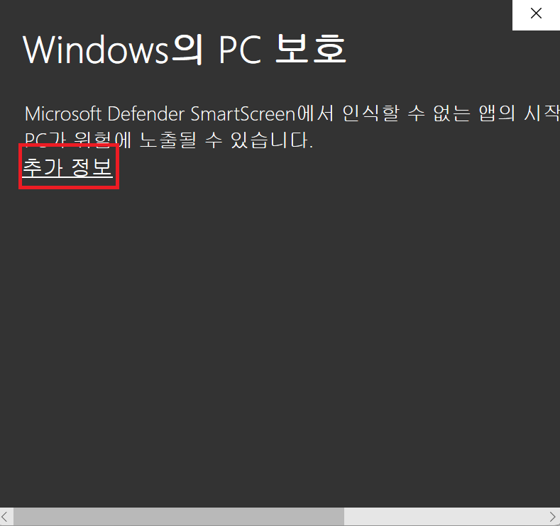
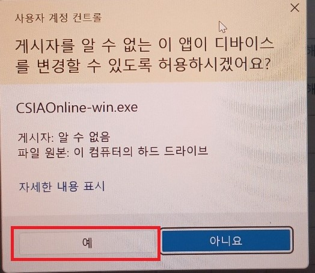
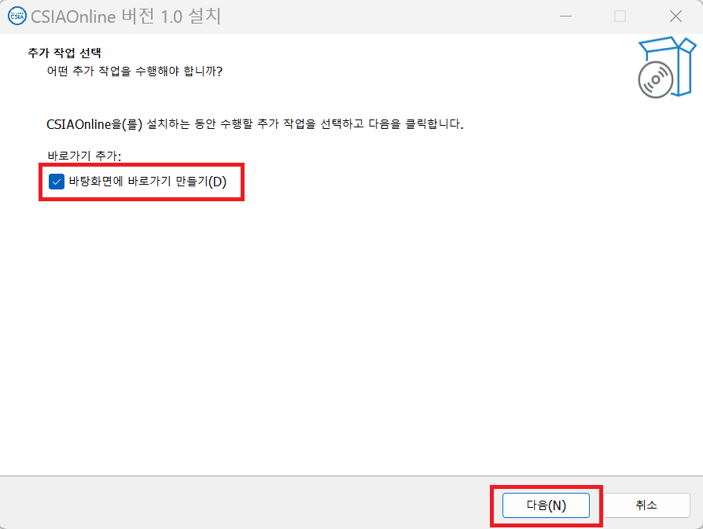
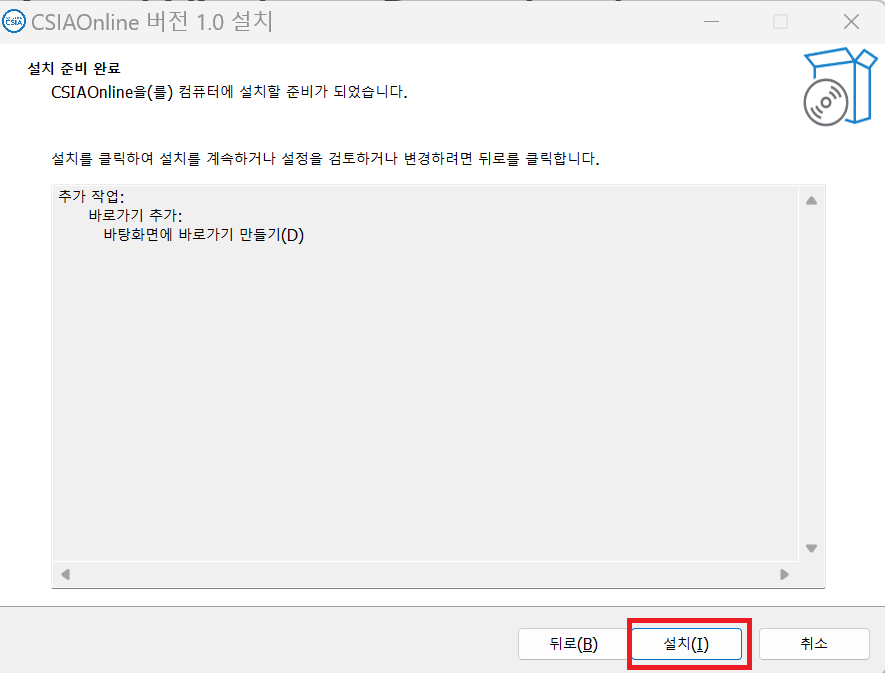
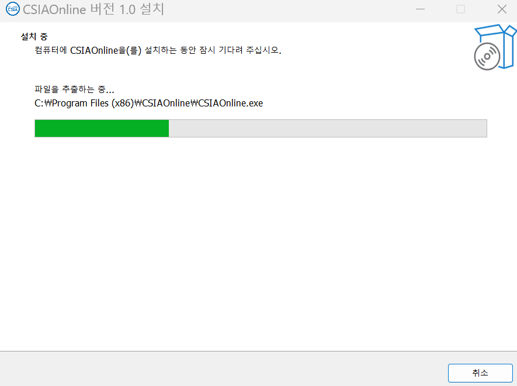
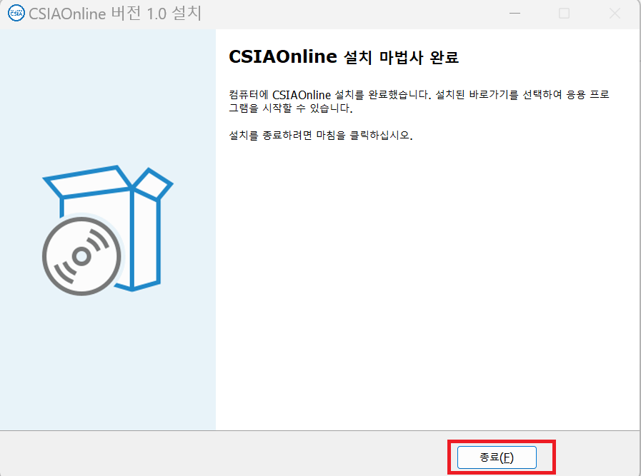
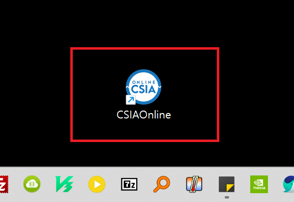
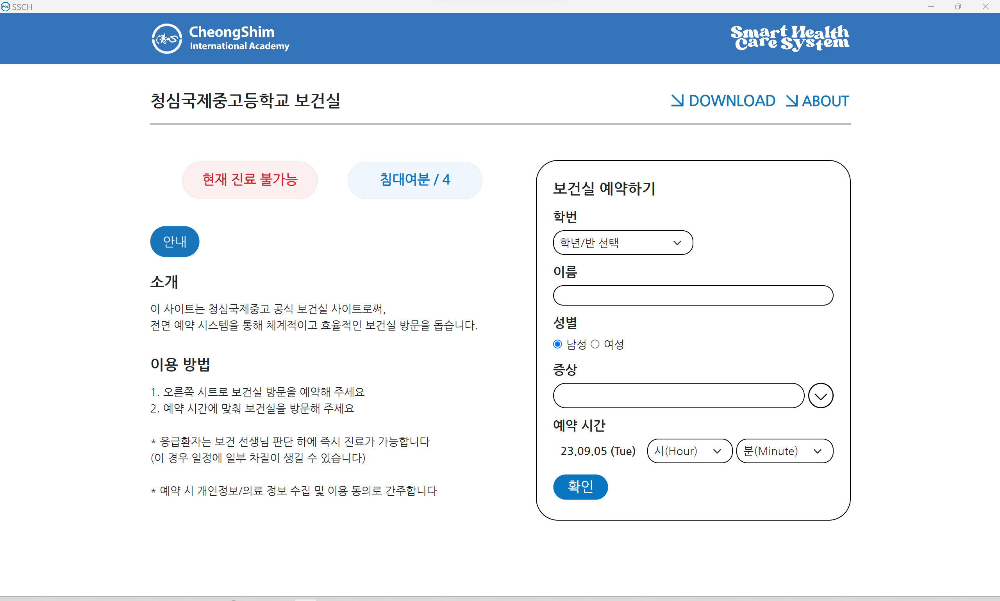

** Installation Manual **

1. 버튼을 눌러 다운로드 한다.

2. 다운로드한 파일을 실행한다.

3. 윈도우 방화벽 창이 뜨면 `추가 정보`를 누른다.

4. 옆으로 스크롤해서 `실행`을 누른다.

5. 디바이스 변경 경고가 뜬다.
다만 여기서 자체 백신 프로그램이 있는 분들은 실행이 안 될 수도 있으니,
백신이 파일을 검사하고 마친 후에 다시 실행해주세요.
다만 여기서 자체 백신 프로그램이 있는 분들은 실행이 안 될 수도 있으니,
백신이 파일을 검사하고 마친 후에 다시 실행해주세요.

6. 실행된 파일에서 `바로가기 만들기`를 꼭 체크해준다.

7. `설치`를 누른다.

8. 기다린다.

9. 이런 문구가 뜨면 성공적으로 설치된 것이다.
`종료` 버튼을 눌러준다.
`종료` 버튼을 눌러준다.

10. 바탕화면을 보면 다음과 같이 실제로 바로가기가 생성된다.

11. 앱을 키면 다음과 같이 나온다.